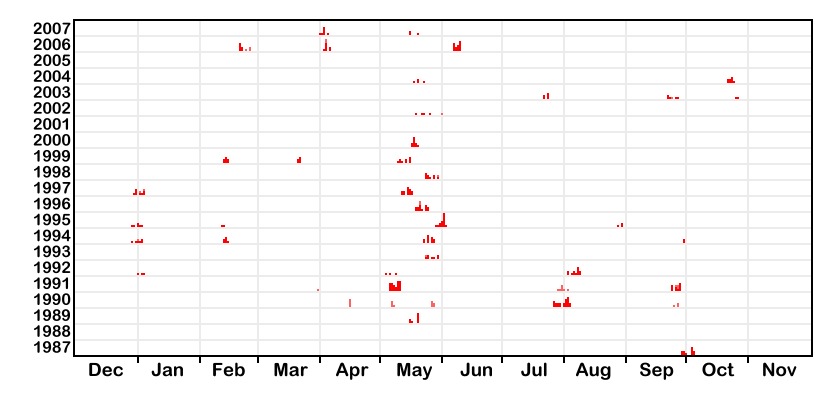

| Jim's Site | |

Last Updated: Tue May 10 21:16:20 BST 2016

This is a chart that shows when I made my ascents of each of the High Mountains of Britain and Ireland.
I started my round of the Munros on Cairn Gorm on 28th September 1987 and finished 19 years, 7 months, 21 days later on Ben Chonzie on 19th May 2007, five days before my 40th Birthday.
From the chart you can see the influence of the annual May Munro Bagging Trip between 1989 and 2000.
The High Scoring peak bagging trips are:
The mountains that are not Munros (i.e. those in England, Wales, Ireland and demoted Munros) are shown in a slightly lighter pink than the red of the Munros.
December is tacked on to the previous year (i.e. the month in the top left hand corner is December 2006, not December 2007). This is because I have continuity of trips between December and January, but not between November and December (in fact I've not done a Munro at all in November), so it makes it easier to identify the trips.
All information on this site is copyright © 1994-2026 Jim Randell